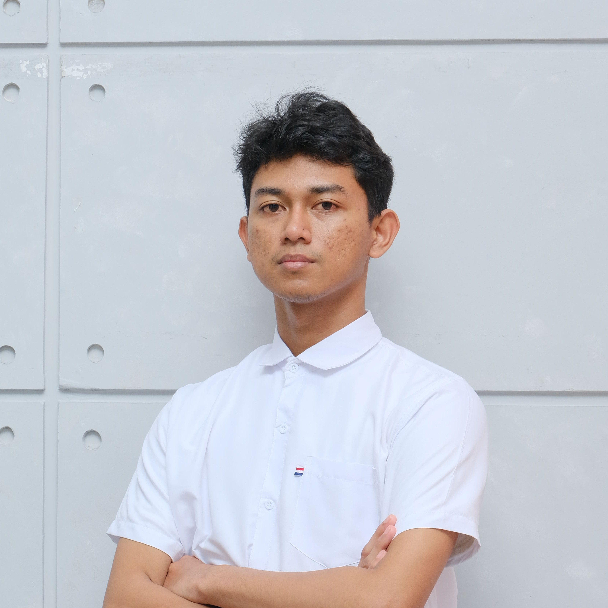
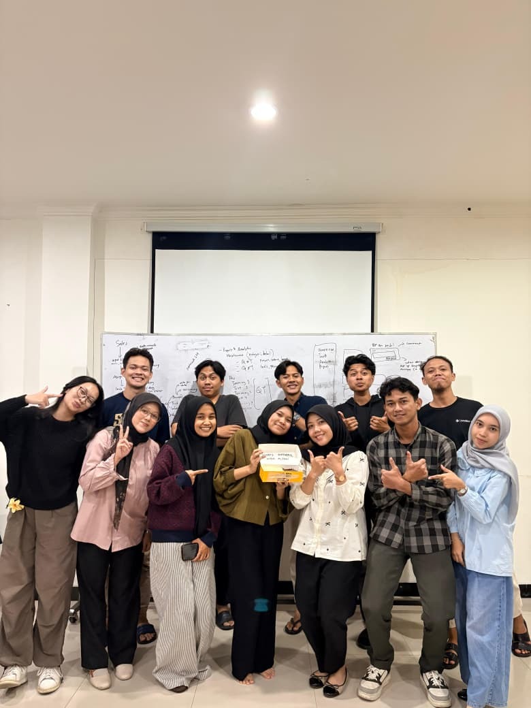
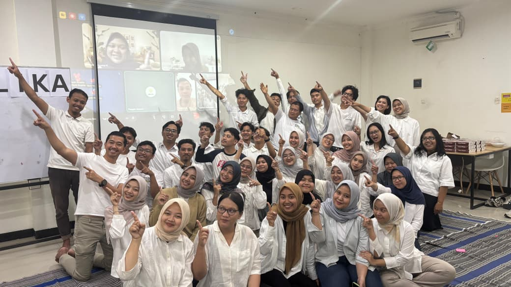
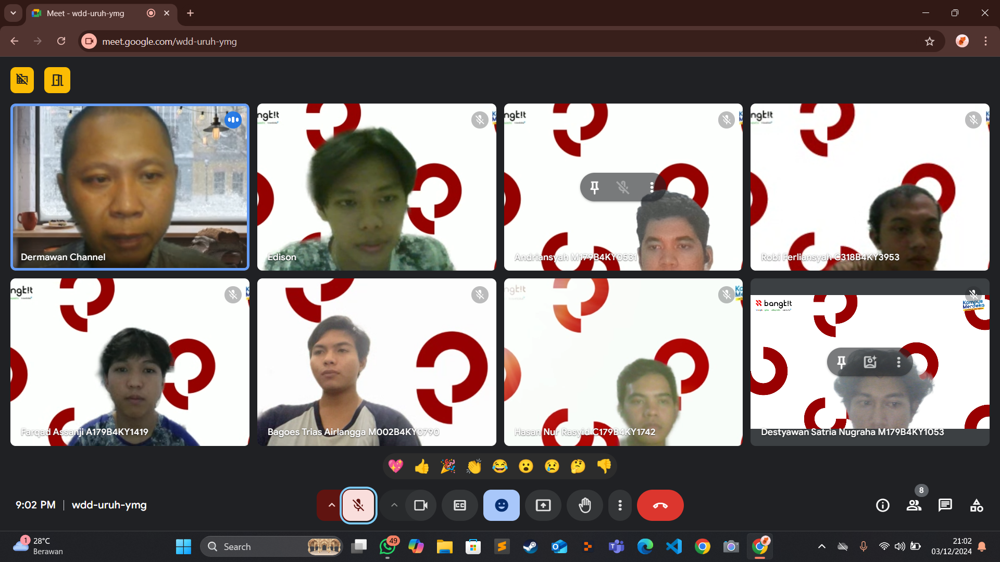
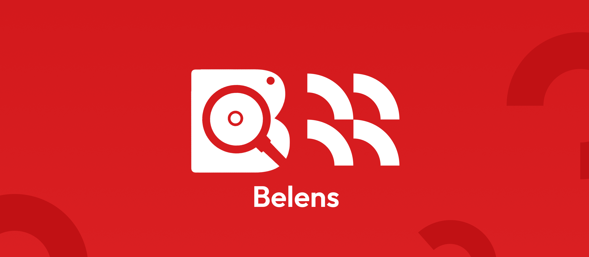

// AI Engineer & Solutions Architect
AI Engineer & Solutions Architect
"Jangan biarkan sesuatu menjadi Anomali—karena anomali sejatinya tidak ada. Itu hanya cerminan dari ketidaktahuan kita."
// 01. about me

Destyawan S.N
AI Engineer & Solutions Architect
Saya adalah seorang insinyur Kecerdasan Buatan (AI) yang memiliki passion besar dalam menjembatani kerumitan model data dengan solusi bisnis yang humanis. Ketertarikan mendalam saya pada Machine Learning, khususnya Computer Vision dan NLP, mendorong saya untuk terus mengeksplorasi bagaimana mesin dapat memahami dan berinteraksi dengan dunia manusia.
Secara akademis, saya terbiasa membangun fondasi algoritma yang solid, mulai dari melatih model Convolutional Neural Networks (CNN) untuk ekstraksi fitur visual hingga merancang sistem Fuzzy Logic untuk mesin rekomendasi berskala presisi tinggi.
Di dunia industri, saya telah mengaplikasikan keahlian tersebut sebagai AI Prompt Trainer. Saya merancang dan mengoptimalkan arsitektur Large Language Models (LLM) untuk 10 klien B2B dari berbagai sektor industri. Fokus saya adalah mengendalikan perilaku AI melalui guardrails yang ketat, mengintegrasikan function/tool calling menggunakan Python dan n8n, serta mendeploy AI tersebut ke lingkungan omnichannel (WhatsApp, Website, Media Sosial) dengan latensi rendah.
Saya percaya bahwa teknologi AI terbaik bukan sekadar soal akurasi matematis, melainkan tentang bagaimana sistem tersebut dapat memecahkan masalah operasional nyata tanpa halusinasi dan dengan pengalaman pengguna (UX) yang natural. Saat ini, saya sangat antusias untuk membawa perpaduan keahlian riset data dan eksekusi Generative AI ini ke tantangan rekayasa teknologi berikutnya.
"Jangan biarkan sesuatu menjadi Anomali"
"karena anomali sejatinya tidak ada. Itu hanya cerminan dari ketidaktahuan kita. Bila tidak tahu, maka carilah tahu."
— Destyawan S.N
// 02. experience




// 03. projects
Bangkit Capstone Project 2024. Aplikasi pengenalan minuman berbasis kamera yang memberikan informasi nutrisi secara real-time menggunakan model ML.
→ Lihat ProjectSistem rekomendasi nutrisi yang menganalisis kebutuhan gizi pengguna dan memberikan saran minuman yang dipersonalisasi.
→ Lihat ProjectAutonomous B2B Sales Agent untuk sektor pertanian yang mengotomatiskan proses penjualan dan komunikasi bisnis menggunakan kecerdasan buatan.
→ Lihat Studi Kasus// 04. skills
// 05. certificates